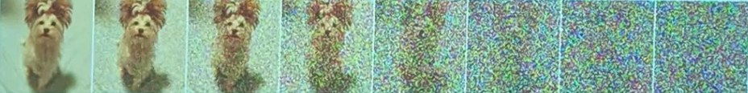
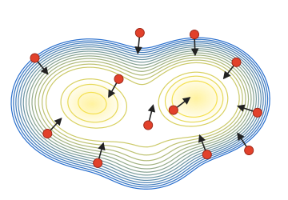
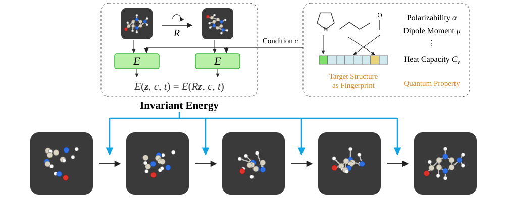

Database / Slides
Slides
Typical Examples – Variational Auto-Encoder (VAE)
- Variational Bayesian inference for probabilistic models with neural networks (Kingma & Welling, ICLR 2013):
q(z \mid x;\phi) \approx p(z \mid x;\theta)
- All the parameters are learned jointly via SGD with variance reduction
- Many improvements/extensions to VAEs, including our work on unbiased estimators: SUMO (Luo et al., ICLR 2020), implicit variational inference (Shi et al., ICML 2018, Zhou et al., ICML 2020) …
Basic of Auto-Regressive DGMs
- Consider a sequence data \quad \mathbf{x} = (x_1, x_2, \ldots, x_d)
- The joint distribution is factorized as
p(\mathbf{x}) = \prod_{i=1}^{d} p(x_i \mid x_1, x_2, \ldots, x_{i-1}) = \prod_{i=1}^{d} p(x_i \mid \mathbf{x}_{<i})
- where \mathbf{x}_{<i} = (x_1, x_2, \ldots, x_{i-1})^\top
- An auto-regression structure
Diffusion Probabilistic Models (DPMs)
- Diffusion process gradually injects noise to data
- Described by a Markov chain: q(x_0,\ldots,x_N) = q(x_0)\,q(x_1 \mid x_0)\cdots q(x_N \mid x_{N-1})
Transition of diffusion: q(x_n \mid x_{n-1}) = \N(\sqrt{\alpha_n}\,x_{n-1}, \beta_n I) \qquad \alpha_n = 1-\beta_n

Diffusion process: q(x_0,\ldots,x_N) = q(x_0)\,q(x_1 \mid x_0)\cdots q(x_N \mid x_{N-1})
Demo Images from Song et al., ICLR 2021
[Ho et al. Denoising diffusion probabilistic models (DDPM), NeurIPS 2020
Song et al. Score-based generative modeling through stochastic differential equations, ICLR 2021]
Two Types of Diffusion Probabilistic Models
Diffusion SDEs and Diffusion ODEs (Song et al., 2021)
- Diffusion SDEs:
Sampling by DDPM is equivalent to a first-order discretization of diffusion SDEs (Song et al., 2021).
- Diffusion ODEs:
Sampling by DDIM is equivalent to a first-order discretization of diffusion ODEs (Salimans et al., 2022).
25Diffusion Probabilistic Models (DPMs)
- We hope q(x_0,\ldots,x_N) \approx {\color{#c0392b}p(x_0,\ldots,x_N)} \color{#c0392b} p(x_{n-1} \mid x_n) = N(\mu_n(x_n), \sigma_n^2 I)
- Achieved by minimizing their KL divergence (i.e., maximizing the ELBO)
Use handcrafted model variance, e.g., \sigma_n^2 = \beta_n
Parameterization of \mu_n(\cdot): \mu_n(x_n) = \frac{1}{\sqrt{\alpha_n}}\left(x_n + \beta_n s_n(x_n)\right)
31Extensions of Analytical-DPMs
- We hope q(x_0,\ldots,x_N) \approx {\color{#c0392b}p(x_0,\ldots,x_N)} \color{#c0392b} p(x_{n-1} \mid x_n) = N(\mu_n(x_n), \Sigma_n(x_n))
- Achieved by minimizing their KL divergence (i.e., maximizing the ELBO)
\hat\epsilon_n(x_n) \approx \mathbf{E}_{q(x_0 \mid x_n)}[\epsilon_n]
(Analytic-DPM) Suppose \Sigma_n(x_n) = \sigma_n^2. The optimal solution is
- Isotropic variance is simple
- Irrelevant to state x_n
- Assume the mean is optimal
Observation 2: Simplifying by log-SNR
A simple exponentially weighted integral
signal-to-noise-ratio (\alpha_t^2/\sigma_t^2)
Define \lambda_t := \log(\alpha_t/\sigma_t)
(half of log-SNR)
We can prove that:
“change-of-variable”
formula
(from t to \lambda)
Designing High-Order Solvers for Diffusion ODEs
Foundation of DPM-Solver
Based on our analysis, given \tilde x_{t_{i-1}} at time t_{i-1}, the exact solution at time t_i is:
Taylor expansion:
DPM-Solver in Diffusers Library
Very easy to use in stable-diffusion
from diffusers import StableDiffusionPipeline
from diffusers import DPMSolverMultistepScheduler
steps = 10
scheduler = DPMSolverMultistepScheduler.from_config("./stable-diffusion-v1-5", subfolder="scheduler")
pipe = StableDiffusionPipeline.from_pretrained(
"./stable-diffusion-v1-5",
scheduler=scheduler,
)
pipe = pipe.to("cuda")
prompt = "a photo of an astronaut riding a horse on mars"
images = pipe(prompt, num_inference_steps=steps, num_images_per_prompt=5).images
for i, image in enumerate(images):
image.save(f"dpm_{steps}_{i}.png")
Variational Score Distillation (VSD)
Simulate Wasserstein gradient flow by particles
- Generally, it is difficult and computationally expensive to train \mu(\theta \mid y) by another parameterized generative model.
- Instead, we use several \{\theta^{(i)}\}_{i=1}^n as the samples from \mu to “represent” the distribution \mu.

Theorem 2. (Wasserstein gradient flow of VSD) Starting from an initial distribution \mu_0, denote the Wasserstein gradient flow minimizing Eq. (1) in the distribution (function) space at each time \tau \ge 0 as \{\mu_\tau\}_{\tau\ge0} with \mu_\infty = \mu^*. Then we can sample \theta_\tau from \mu_\tau by firstly sampling \theta_0 \sim \mu_0(\theta_0 \mid y) and then simulating the following ODE:
where q_t^{\mu_\tau} is the corresponding noisy distribution at the diffusion time t w.r.t. \mu_\tau at the ODE time \tau.
Equivariant Energy-guided SDE (EEGSDE)
Bao & Zhao et al., ICLR 2023

Summary
- Diffusion probabilistic models are powerful in image synthesis, image-2-image translation, crossmodal inference, reinforcement learning, etc
- We propose Analytic-DPM that proves analytical solutions of the mean and variance, with 20 to 80 × speed up
- We propose DPM-Solver based on a highly simplified formulation of the exact solutions of diffusion ODEs; it can generate high-quality samples in around 10 steps and almost converge in 20 steps.
- We propose a unified diffusion model for crossmodal inference, and an energy-guided SDE for image-2-image translation
- Check out https://ml.cs.tsinghua.edu.cn/diffusion/RelatedWork for other progress on molecular design, RL, backbone architecture, etc